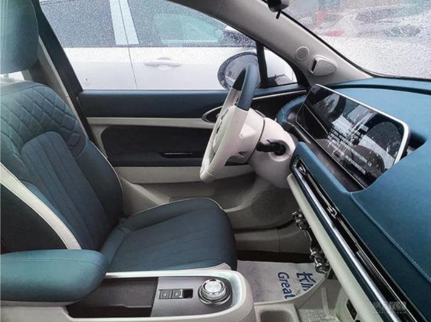

网易汽车8月27日报道日前有媒体报道表示，欧拉猫系列的第三款车型欧拉好
猫预计将于10月正式上市。新车是基于长城柠檬+咖啡智能平台打造，定位纯电动
SUV,续航里程可达501km。[加入车友群， 添加官方微信]

外观方面，欧拉好猫的整体造型让人联想到菲亚特500 (参数|图片)，
但整体轮廓更宽大。从车头角度看，又有些酷似大众甲壳虫。
前脸上萌萌的圆大灯、井盖式轮圈等都是现代配备与复古设计的巧妙融合。

尺寸方面，欧拉好猫的长宽高分别为4235/1825/1596mm, 轴距为 2650mm;比旗下在售的白猫和黑猫都大出一圈多。 另外，新车还提供3种样式的轮圈和2种规格的轮胎(205/55R17. 215/50R18).
内饰方面,新车采用与白猫类似的贯通式双大屏和双辐多功能方向盎; 中控屏方还设有全镀铬材质的横贯式出风口以及多个镀铬按键， 十分精致。同时新车内文田名名文大为菇、 白只外新大的中中控制及江有器有站红式地地 机构和电子手刹+AUOTHOLD按键。
| 车辆基本信息 | 配置ID:nc542031 |
| 外魔尺寸长( mm) : | 4235 |
| 外魔尺寸宽( mm) : | 4825 |
| 外魔尺寸高(mm) : | 1596 |
| 总质量(kg) : | 1885 |
| 整备质量(kg) : | 1510 |
| 最高车速( km/h) : | 150 |
| 30分钟最高车速(kmh) : | 150 |
| 续驶里程（km/h） | 501 |
| 电池系统能量密度 (Whikg) : | 177.20 |
| 工况条件下百公里耗电量(Y)( kWh/100km) : | 13.20 |
| 储能装置种类: | 三元锂离子电池 |
| 驱动电机类型: | 永磁同步电机 |
| 驱动电机峰值功率/转速转矩(kW( kWh/100km) : | 105/16000/210 |
动力方面，新车搭载了由联合汽车电子有限公司生产的型号为TZ 153XS000驱 动电机，其最大功率为105kW (白猫为35kW)。同时,其还将配备由蜂巢能源科 技有限公司生产的三元锂离子电池组,续航里程可达501km。